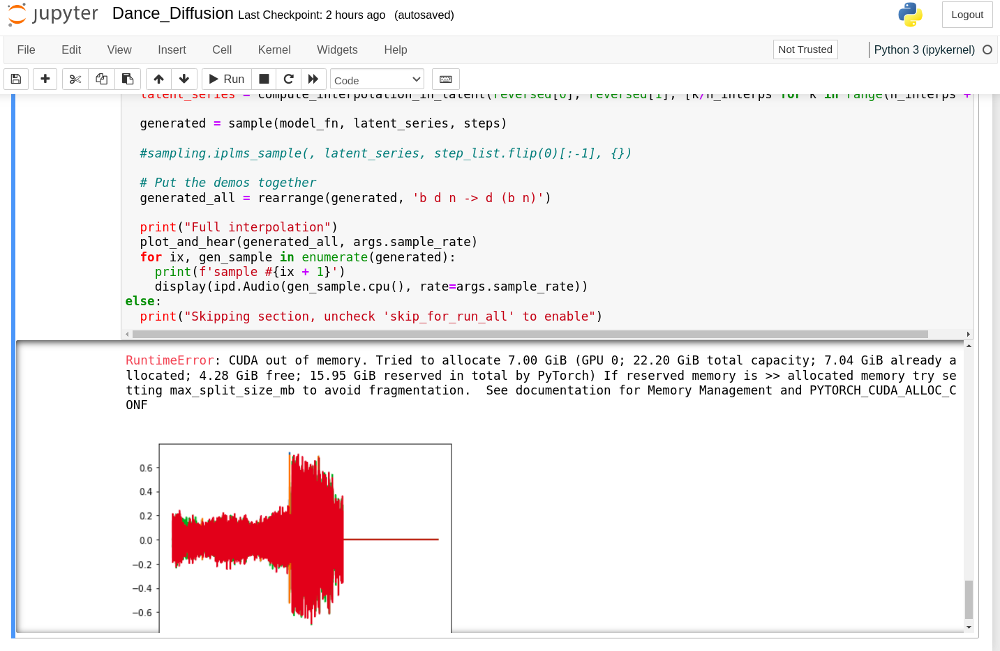

Bitácora de
exploración:
machine learning
<=>
sonido
Introducción
Vengo explorando bastante las posibilidades del estado del arte de modelos de difusión para síntesis sonora y musical.
Me encontré con una variedad grande (en comparación con hace 5 años) de modelos , flujos y pipelines posibles.
A nivel relacional hay un rango amplio de grados de interacción humano-computadora, dejando distintos sabores en mi boca y sensaciones en mi cuerpo.
Los modelos basados en difusión se basan en la "destrucción" de un dato, en inundarlo de ruido y, en el proceso, avanzando en esa destrucción, aprender a reconstruir. Hay modelos basados en difusión para todo tipo de medio (video, imagen, 3d, texto, etc), y constituyen el estado del arte en el Machine Learning generativo.
Experimentos
Este escritos son un intento autoetnográficos de entender los cambios en mi cuerpo y mente al ser atravesados por estos procesos. Pienso estos procesos como un reaching-out, relacionamientos tentaculares bidireccionales con el cómputo. También un deseo de co constitución, de sentirme vincular y más distribuida.Beg your visit: Introducción a modelos en pipelines de producción
Beg
Beg es parte de otro proyecto que le llamé i believe in fairies.Visit es parte de otro proyecto que lo llamé bright plants.
Ambos formaban parte de mi producción previa. Trabajé en estos de la forma en que suelo trabajar con bitwig: intento pensar en una sensación corporal e intento hacer un arreglo mínimo que yo sienta que capture esa idea original. Supongo que metodológicamente hablando tiene que ver con mi interés en el concepto de maestría. Me interesa mucho en particular la idea de duración mínima, me sirve ponerme esa cota porque me permite iterar rápido. Iteraciones rápidas son mi zona de confort, parte de los sesgos que introduzco a mi producción artística por mi background de programadora industrial.
Bright Plants empezó como proponerme hacer algo más... bright, tal vez tirar para lo orgánico.
Primera iteración: Inmediatamente cambié el rumbo, porque siempre me llama la atención lo más grave. incorporé dos samples; un sonido stock de risas de público y uno que dice "For more information please visit". Suelo armar experimentos sonoros cuando me siento sola y este también iba por ese lado. Me gusta escuchar la reacción del software, pensar y escuchar algo del otro lado me hace entrar en un loop reconfortante. No estoy muy conforme con el resultado entero de por sí. Me parece interesante como una entrada a una bitácora personal, de un momento de mi vida y como punto de partida. Hice muchas variaciones y versiones de este mismo tema, y la versión instrumental es la que actualmente me gusta más a nivel pieza entera. Más allá de eso, creo que esta es la que me genera una reacción más fuerte. Así que decidí samplearla.
ffmpeg -ss 30 -t 7 -i Master1.wav visit.wav
Extraje la parte que más me interesó de esta semilla.
Visit
I believe in fairies era otro experimento en donde intenté ir por un sonido más alegre y no me salió. No tengo tantas versiones de este mismo tema, pero me gustó la introducción, así que la extraje:ffmpeg -ss 0 -t 7 -i Master.wav beg.wav
La llamé beg por beginning, pero también era un juego de palabras conmigo misma teniendo en cuenta que estoy en un momento de negociación con dios con la vida conmigo misma con la semántica. Supongo que desde hace varios años que pongo al cómputo como árbitro entre dios y mi mente.
Si tuviera que escribir en un papel la función semántica que relaciona mi lenguaje y mis reglas de producción con el "mundo exterior" , el cuerpo de la función se vería como una pieza de metaprogramación de varios niveles. Cuando ingreso el cómputo del cómputo siempre es más fácil construir deseo, sentirme en casa. Si puedo pensar que 1+1 no es 2, sino que
1+1::Int->Int mientras que 2::Int. Y que le pese a quien le pese.
Dentro de mi lenguaje, la parte de análisis semántico es otro compilador. Un compilador de compiladores.
Otra forma de decir lo mismo sería, necesito entender cómo funciona el sentido. Es para mí una necesidad de vida o muerte. Es una duda existencial.
Volviendo a mi otro lenguaje, ahora veo conexiones. Cuando hablaba de bucles de reflexión<->implementación, la reflexión
Interpolación
Usando el interpolador, empecé a experimentar con hiperparámetros para entender más el modelo. Hay múltiples hiperparámetros para jugar, pero yo destaco tres.Tres grandes hiperparámetros:
#Total number of steps (100 is a good start, can go lower for more speed/less quality)
#n_interps Number of interpolated samples
#sample_length_mult Multiplier on the default sample length from the model, allows for longer audio clips at the expense of VRAM
sample length
El sample length es el parámetro que más impacta el consumo de VRAM. Me interesó entonces encontrar la cota superior: cuándo rompo nabucodonosor jugando con este parámetro?Fijando el resto de los parámetros, fui moviendo el Sample Length multiplier:
#@markdown Multiplier on the default sample length from the model, allows for longer audio clips at the expense of VRAM
sample_length_mult = 3#@param {type:"number"}
Length mínima 1: momentos de silencio ruidoso seguidas por risas que van creciendo e iterando. intenta reconstruir el "please visit" por debajo de la risa pero no puede. Duración 38 seg Length 2: Mucho menos ruido, detalles que suenan por lo bajo, casi como bongoes permiten una escucha más cercana. Tiran a un sonido nu age. Me gusta que siento que me invita a escuchar con atención y de cerca. Intenta reconstruir el "please visit" y le termina saliendo. Va balbuceando hasta llegar. Duración 1:16 minutos. Length 3: Se intercalan momentos de silencio total que me atraen. Mucho más violento/tosco que el anterior, en donde el modelo prefirió algo más sutil. Esta pieza necesita escucha lejana. La risa se incorpora como un ruido de fondo totalmente transformada, creo que sin el dato del sample original sería dificil reconocerla como risas. El entrecortamiento con el silencio total es una constante en toda la pieza. Duración 1:54 minutos.
Length 4:

steps
Conociendo hasta dónde podía estirar a la nabu por ahora, puedo hacer que trabaje más con un sample length que a mí me interese: el 2.Puedo hacer 80 steps, con 12 interpolated samples, con sample length 2.
Tiene inicios de buenas ideas, pero el sample length le juega en contra. Es muy interesante la alucinación de las palabras habladas.
Se dificulta aumentar los steps por problemas de conexión con la nabu. Voy a tener que esperar para probar eso otro día.
orden de los samples
Muestro acá el resultado de intercambiar el orden de los samples, pero no me gustó particularmente el resultado.Conclusiones
Me parece interesante incorporarlo a la caja de herramientas. Lo que más me atrae es la sorpresa y la búsqueda de sorpresa. Obviamente intentando romper con cuidado o romper con mi cuidado. Caos controlado.En base a estos samples hice un reversionado de bright plants/bright complex/no more brightness.